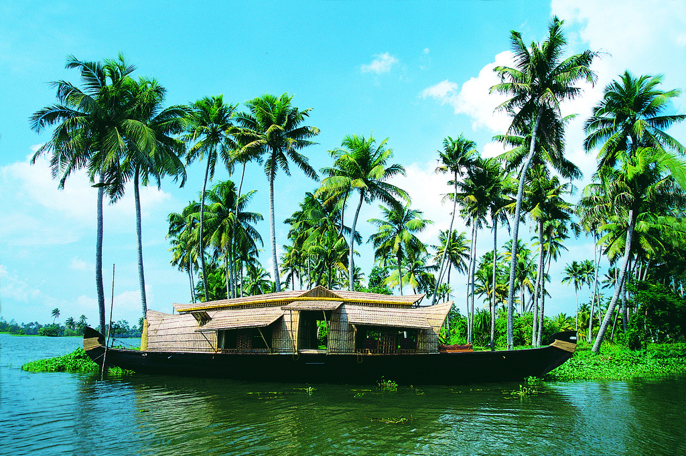

HAMPI
Hampi is situated on the banks of the Tungabhadra River in the eastern part of central Karnataka.
KERALA
Kerala, a state on India's tropical Malabar Coast. It's known for its palm-lined beaches and backwaters, a network of canals.

HOGENAKKAL FALLS
Hogenakkal Falls is a natural wonder. It's a place where you can reconnect with nature and find its beauty.
MADIKERI
Madikeri is a hill town in southern India. Framed by the Western Ghats mountain range.
MANGALORE
Mangalore is an Arabian Sea port and a major commercial center in the Indian state of Karnataka.